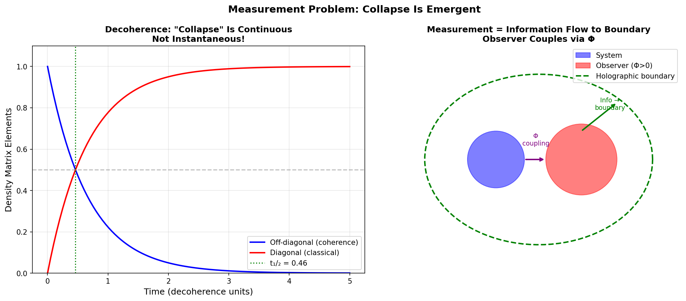

The Measurement Problem: Collapse Is Emergent, Not Fundamental
Douglas H. M. Fulber • UFRJ • January 2026
Abstract
Quantum mechanics has two evolution rules: unitary (Schrödinger) and collapse (measurement). When does collapse
happen? In TARDIS, there is no fundamental collapse. Decoherence continuously transfers
coherence to the environment/boundary. The observer role is information integration (Φ > 0), not mystical
consciousness.
1. Resolution
Collapse = Decoherence: Off-diagonal elements decay continuously
Observer = Φ > 0: Systems that integrate information witness outcomes
Holographic: At Planck scale, states are definite (boundary encoded)

Figure 1: Left: Decoherence timeline—"collapse" is continuous, not instantaneous.
Right: Observer-system coupling via Φ with information flowing to boundary.
2. Conclusion
🟢 No Measurement "Problem"
Collapse is emergent decoherence + holographic encoding.
No special role for consciousness beyond information integration.
References
Zurek, W. H. (2003). Decoherence and the quantum-to-classical transition. RMP.
Fulber, D. H. M. (2025). TARDIS Framework. ToE Project.